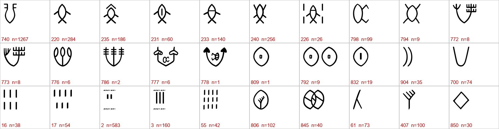
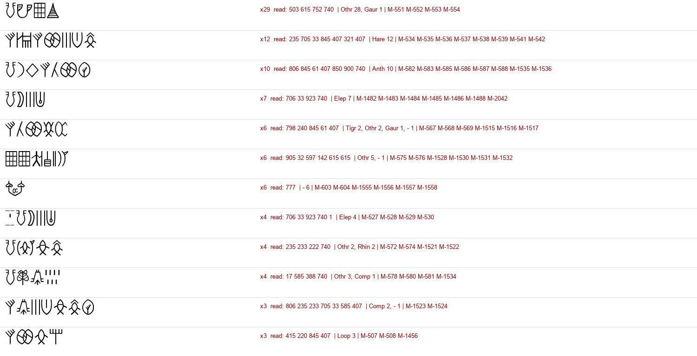

At a glanceNot solved · text not obtained
- The text
- Some 4,500 Indus seals, tablets and sherds, most with fewer than five signs; about 400–600 signs, written mostly right to left, with no word dividers, no bilingual and no known language.
- How it was tried
- Every count in Parpola’s 2005 lecture and his 1994 readings was rerun on two independent transcriptions. Then hypotheses were written down and committed before the data were looked at, tested, and recorded as held or failed, with replications on held-out samples and controls on two readable scripts (Linear B, Ur III seals).
- What came of it
- A detailed grammar without sound values: names end in a slot whose form is chosen by the name’s last sign; line breaks respect word units; numerals are fixed with what they count. The kind of object shapes the text, and the size of a number decides what is counted. Parpola’s star readings rest on one or two seals each, and his later readings are not supported.
- The graffiti
- The Tamil Nadu graffiti resemble Indus signs one by one, about as often as simple marks resemble unrelated scripts; they do not combine signs the Indus way, and the Indus-like ones are not the oldest.
- Still open
- Everything phonetic, and the language. The tiers that decide a decipherment are near zero (section 9). Corrections and withdrawals are listed in section 10.
01 Data and method
Two transcriptions, tied sign by sign. A database derived from the Interactive Corpus of Indus Texts (ICIT; Wells and Fuls), published with the indus-website project (2,543 objects; a fuller export of 5,680 records with find spots, levels, sizes and materials), and Mahadevan’s 1977 concordance (M77, 2,906 texts). The ICIT signs are numbers only, so they were identified by drawing each in the database’s own font. Aligning the 991 lines the two share puts 96% of signs on a single counterpart; the 1,664 M77 texts missing from ICIT are the replication sample (‘B’) throughout. Parpola’s own transcription (the open digitisation of CISI vol. 1) agrees with ICIT on 92% of sign positions and 98% of last signs.
Registered tests. For each set, hypotheses and thresholds were committed to targets/indus/PREDICTIONS.md before any script looked at the data, then run and recorded without moving the threshold; bugs and ill-posed tests are recorded with their corrections. Counts are over distinct texts, so mould copies and sealings of one seal count once. Readable controls: Linear B (DAMOS) and the Ur III seal legends (22,402 impressions, ORACC).

02 Parpola’s claims and readings
- The lecture’s counts mostly hold. The jar 740 is about 10% of all signs and never stands beside itself in South Asia (0 against 4.0 expected). Fish signs are 9.7% of seal signs; the crab stands beside the marked fish, not the plain one.
- The star names rest on one or two seals. ‘7 + fish’ (Ursa Major) occurs once, ‘fig + fish’ (the North Star) twice (M-172, M-414). The commonest numeral + fish is ‘2 + fish’ (113 texts), not ‘6 + fish’ (8), in three transcriptions and two ways of counting. The numbers before the fish are 1, 2, 3, 4, 6, 7 and 12, never 5, although Tamil has a star name for 5.
- The Tamil check is weak. For 98 picture concepts fixed in advance, some Tamil word begins one of Parpola’s star names 15% of the time (30% with the readings’ sound latitude). Sanskrit gives 19%, Sumerian 10%. Across 2,895 languages (CLICS4) the words for ‘fish’ and ‘star’ coincide in only three, Old Tamil mīn among them, so the first step of the fish readings is distinctive of Dravidian even though the compound check is not.
- The later readings are not supported. Sixteen readings from 1997, 2008 and 2010 were turned into predictions about how the signs are used. Two held, and both restate the positions the readings were built on (stroked jars open lines; 741 patterns with 740). The caged fish do not pattern with the ‘spear’ 520 they are said to be homophonous with, the two long strokes not with the fish, and ‘six + fish + yoke-carrier’ is not a unit.

03 The copper tablets: seven sign = image equations
The copper tablets of Mohenjo-daro carry an inscription on one side and an animal or figure on the other; in some sets a single sign takes the place of the picture. Matching Parpola’s 46 sets to the transcriptions gives seven equations: the fig + crab ligature 777 = the markhor goat and the horned archer; 749 = the markhor goat; 341 = the rhinoceros; 753 = the hare; a lens-shaped sign = the long-horned bull; “3 700 900 165” = a spotted bull. These are the firmest meanings the script offers, and any reading must fit them. No published key gives values to 749, 341 or 753, and none of their glosses names the picture on any anchor text they cover, so every key so far is untested by this gate rather than passing it.

04 The grammar a reading must fit
- Four kinds of text, one vocabulary. A name with its ending, a line ending in a closer, a count, or a bare sequence: only 3 of 2,722 distinct lines fit none.
- The ending slot is chosen by the name’s last sign. 740, the ‘arrow’ 520, one of a dozen closers, then optionally 400 or 90. The last sign predicts the ending in 95% of Mahadevan’s separate lines; 30 of 30 signs that prefer one ending on ICIT keep it on M77. 740 is the open ending; the 520 names use 26 main words, mostly fish signs, and include the seal closing formula ‘705 / 706 + long 3 + 520’, the long form of the fish names.
- Names are head-final, grow at the front, and numerals stand before what they count. There is no number agreement and no chain of suffixes.
- Line breaks respect units. The 30 most tightly bound pairs are never split across a line (0 against about 5), and names are almost never split from their ending.
- Graphic marks. The cage of four strokes turns a fish into a closer that stands in place of the ending; strokes inside the jar or the U turn the ending into a name element. Other drawn marks (30 pairs from Parpola’s descriptions) keep the sign’s job: they differ from their base less than unrelated signs do.
- Substitution partners are a property of the sign. Texts identical except at one position put two signs in one slot; a sign’s set of such partners on the ICIT lines recurs on Mahadevan’s (p = 0.001). The method sorts Linear B signs into numerals, measures, ideograms and words (the positive control) and the ICIT signs into numerals, endings, markers and the rest, though not Mahadevan’s; the partner table is in
results/substitution_classes.tsv, and a lexicon of 369 recurring units with their sites, object kinds, endings, counts and pictures inresults/unit_lexicon.tsv. - One system everywhere. Learned at Mohenjo-daro, the grammar parses Harappa almost as well as its own lines; learned on seals it parses tablets, and on late levels the early ones.
05 What the texts are: names, objects, numbers
- Seal texts are individual compositions. Capture–recapture across Mohenjo-daro and Harappa puts the population of names at roughly 3,000–5,500, with 92% on one seal, as Linear B personal names of the same length behave. On Ur III seals only the whole legend (name, title, father) is that individual. A name is not tied to its seal’s animal.
- The object shapes the text, the region does not. Sign context differs by kind of object (seals, tablets, pottery; copper, incised and moulded tablets; kinds of seal), and models that know the object kind predict unseen lines better (4.635 → 4.559 bits per sign, also on sign tokens alone, replicated). Within square seals no sign differs by region: apparent ‘northern’ signs (158, 400, 700) are moulded-tablet signs, and moulded tablets are mostly Harappan. Period, material, shape and workmanship add nothing beyond object kind.
- Seal size goes with content. Large seals carry 706 and the closing formula and more rare signs; small seals carry 156, 400, 590, doubled signs and repeated texts. Large seals look individual, small ones formulaic. Seals with the long closing formula are larger (30 against 27 mm), and where one name is written both ways the formula copy is the larger seal in 6 of 7, too few to claim.
- The size of a number decides what is counted. Numbers 1–3 count the fish signs and 803 / 806; numbers 4 and up count 390, 405, 407, 575, 585 and 900, and those large-number units stand at the end of the line (mean position 0.79–0.82 against 0.50–0.66), in every length band. Both hold on M77 and within one numeral series. They are not tied to one object kind (at Mohenjo-daro the large units sit on tablets, at Harappa the small ones do) and do not go with the picture on the object. A Linear B control shows the same split as ordinary bookkeeping: at Knossos sheep, grain, wool and olives take large counts, chariots, women, horses and months small ones, and 9 of 12 skews repeat at Pylos. By that analogy the large-number units are the better candidates for herds and bulk goods, the fish for persons or objects. Wells (2015, pp. 69–70) had noted part of the split. Both groups take endings alike; what sets the large-number units apart is that they stand bare at the line end (21–39% against 1–12%).
- The measure sign 700 takes a bounded set of values. Before 700 the long strokes read 2, 3 or 4 almost exclusively (1 once in 172 cases, 5 never), on moulded and incised tablets alike. A shortage of 1 is what Linear B measure sub-units show, but the Indus mode of 3–4 matches neither Linear B measures nor discrete counts: a graded unit, or a fixed set of denominations. The stroked jar and U ligatures do not stand where the written-out numeral + sign sequences stand (short-stroke sequences are never written; long-stroke ones share no contexts): a ligature is a form of its own, not an abbreviation.
- Short labels are different words. Two-sign ‘X + ending’ lines use different heads from texts of five or more signs, on both corpora and within square seals alone; their heads go with the seal’s picture only weakly (p = 0.02, mostly the default bull), unreplicated.
- Place and time. Within Mohenjo-daro, what a seal says does not depend on where it was found. Between early and late levels the ending slot does not change; the numerals and the way names begin do.
06 The language, as far as order shows it
Numerals before what they count, head-final names, a short class suffix fixed by the noun and no prefixes fit Dravidian and Indo-Aryan and count against Sumerian and Elamite. Against WALS and Grambank these features rule out 85% of language genera (77% of Grambank families); Dravidian, Indo-Aryan, Munda, Burushaski, Turkic, Mongolic, Japanese and Korean remain. Comparisons of name structure first leaned to early Prakrit donor names over Tamil-Brahmi ones; with genre matched, Japanese given names came out nearest, so those statistics cannot pick a language. The one class signal, fish-headed names taking 520, fits a Dravidian person / non-person split and a Sanskrit gender reading alike.
07 Other people’s claims
- Mahadevan’s ‘merchant of the city’ (255 435 690 740) is a real unit in 22 texts at three sites, but it does not behave as a title qualifying nouns.
- ‘Too little repetition to be writing’ (Farmer, Sproat and Witzel 2004) fails on a genre-matched control: Indus seal lines repeat a sign about as rarely as Ur III seal legends repeat a word.
- Published keys. A character-model scorer that recovers Ventris’s Linear B key against all 100 shuffles finds no substantial published key reading its claimed language better than its shuffles (Fairservis, Yajnadevam, Parpola, Mahadevan). Fitting values freely picks the wrong language on Linear B (Sanskrit best, Greek last or third), so a free fit is no evidence for a language.
- Wells. His 1998 thesis lists the CISI objects each of his signs occurs on; 69 of 74 of his signs map cleanly to ICIT through those lists. His ‘dividers’ are mostly the heading recurring mid-line, and signs 1 and 2 do not divide words (as Fuls 2024 argues). His 2015 book proposes values for 13 signs and a volume system (700 + long strokes, one stroke about 40 litres from three measured jars); as predictions about use the values fail (032 is not an ending, 850 does not combine like a syllable sign, 752 + 820 never occurs), and the scribes’ line breaks do not fall at his initial-cluster boundary, though the opener and its marker 1 / 2 / 60 are never split. His 2011 book was not available.
08 The Tamil Nadu graffiti
The Tamil Nadu State Department of Archaeology and the Indus Research Centre have published 9,486 graffiti from 140 sites (Rajan and Sivanantham; tngraffiti.in), with an Indus parallel in Mahadevan’s numbering for 31 of their 42 base signs, sequences of signs written together, and find site and depth. Using their own parallels, so the tests are not shaped here:
- Composite marks do not combine signs the Indus way. The corpus’s multi-sign records are ligatured marks; of 193 adjacent component pairs, 62 are Indus neighbours, no more than with the parallels shuffled (p = 0.16) or the signs re-paired (p = 0.14), and their order does not follow Indus order (14 of 32). Graffiti order in general is looser (70.5% consistent against 88.0%), and the graffiti signs that most often enter composites do not correspond to the Indus signs that most often host marks (rho −0.05).
- The parallels are about what chance gives. The 42 base signs were matched, blind and under one strict standard, against 90 random signs from each of four scripts. Exact parallels: Indus 5–6, Cypro-Minoan 3–11, Linear B 2–4, Linear A 2. At the looser ‘exact or near’ level Indus reaches 57% and Cypro-Minoan 64%: the book’s “nearly 60%” is what simple marks (Y, U, circle, cross, hourglass, a stroke) find in any sign list.
- The Indus-like graffiti are not the oldest. Within 12 excavated sites they lie no deeper than the rest; at Keeladi, where layers are dated, 74% of the graffiti below 300 cm (5th–6th century BCE) have an Indus parallel against 82% above 200 cm.
- The book’s positional remarks do not carry over: the jar is the Indus line’s ending, leftmost only because the scripts run in opposite directions; the ladder is too rare to test; ‘the wavy line never stands alone’ is true of Indus but untestable there, and on the graffiti side the corpus’s own data show the wavy line alone 73 times and neither the jar nor the ladder mostly initial.
09 Against the prize
In January 2025 the Government of Tamil Nadu offered one million US dollars for a decipherment “to the satisfaction of archaeological experts”. The work was scored against what such a panel would need (targets/indus/PROGRESS.md):
- Meaning checked against outside evidence: 0.008% of sign tokens (the copper-tablet picture signs; numerals counted apart). One step short of reading, text units that go with one picture across distinct tablets cover about 5% of tokens, confirmed on held-out halves but right only about 5% of the time on unseen tablets: local labels, not portable meanings. The method passes the Linear B control (143 word–ideogram pairs against 2 by chance).
- Positive control: three of six methods recover Greek from Linear B; dictionary scores and free key fitting do not.
- Unseen texts: none read. The models are frozen for inscriptions published after the 2022 corpus, but none with sign numbers or usable photographs has been found online.
- Prediction: 4.559 bits per sign on held-out lines; a hidden sign is guessed first 40% of the time and in the top five 62% (9.6% and 22% by frequency).
What would win: values for the seventy or so common signs, reading most tokens as phrases of one language, agreeing with outside evidence, passing the Linear B control and reading texts not used to set the values. The present work supplies the grammar and the tests such a claim must pass; it supplies no readings.
10 Open, and withdrawn
Open. No sign has a sound value the evidence forces, and the language is not identified. Internal testing has largely run out: the last long runs ended after twenty loops in a row without progress. What is left needs new material: a bilingual, newly published inscriptions (the frozen models wait for them), CISI volumes 2 and 3, Wells 2015.
Withdrawn or corrected by later tests (kept in the record):
- A shortlist of 46 ‘sound signs’ failed all its tests; ‘two numeral systems’ became one in several stroke forms.
- ‘Office + name’, ‘numeral compounds are local customs’, ‘Mohenjo-daro converges on Harappa’ and ‘Indus names are nearer Indo-Aryan’ were each narrowed or withdrawn by controls.
- ‘Indus names are personal names’ narrowed to ‘individual compositions’ by the Ur III control.
- ‘Shared phrases predict a tablet’s picture’ was a favourable split.
- ‘Regional signs’ were moulded-tablet signs; a ‘writing direction’ model had learned the source corpus; a context gain was the end-of-line token; long-distance sign pairs were repeated phrases; rare signs in long lines were a length effect.
11 Sources
- A. Parpola, “Study of the Indus Script”, Transactions of the International Conference of Eastern Studies 50 (2005), 28–66, harappa.com; Deciphering the Indus Script (Cambridge, 1994); “Dravidian and the Indus script”, Studia Orientalia 82 (1997); A Dravidian Solution to the Indus Script Problem (Chennai, 2010).
- J. P. Joshi and A. Parpola, Corpus of Indus Seals and Inscriptions 1 (Helsinki, 1987); its open digitisation, mayig/indus-valley-script-corpus (MIT).
- The ICIT-derived corpus of the indus-website project (github.com/yajnadevam/indus-website); A. Fuls, Corpus of Indus Inscriptions (2022), A Catalog of Indus Signs (2023), and Iranian Journal of Archaeological Studies 14.1 (2024); I. Mahadevan, The Indus Script: Texts, Concordance and Tables (1977), via github.com/joyboseroy/indus_decipher; B. K. Wells, An Introduction to Indus Writing (MA thesis, Calgary, 1998).
- Controls and comparators: DAMOS (Linear B); ORACC epsd2/admin/ur3 (Ur III seals, CC0); Monier-Williams; ePSD2; CLICS4; L. L. Merriam and A. Fuls, The Dravidian Database (Zenodo); WALS and Grambank (CC BY 4.0); H. Lüders, A List of Brahmi Inscriptions (1912); I. Mahadevan, Early Tamil Epigraphy (2003); DHARMA Tamil corpora (CC BY 4.0); Noto Sans Linear A, Linear B and Cypro-Minoan (OFL).
- The graffiti: K. Rajan and R. Sivanantham, Indus Signs and Graffiti Marks of Tamil Nadu: A Morphological Study (2025), from the Tamil Digital Library; the Graffiti Marks of Tamil Nadu web corpus, tngraffiti.in (TNSDA and the Indus Research Centre, RMRL); K. Rajan, R. Sivanantham and Yatheeskumar, Recent Scientific Dates: Archaeological Sites of Tamil Nadu (2025). The prize: announcement of 5 January 2025 (Archaeology Magazine).
The scripts, the registered hypotheses (PREDICTIONS.md), the results of every set (results/) and the working notes (NOTES.md) are in targets/indus/.